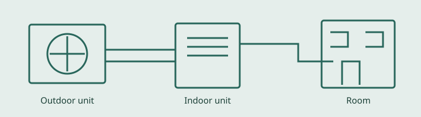

PAGE B / CONTROLLED ABSENCE
Meadow Test Climate Care
An informed approach to home comfort.
This fictional business page describes residential heating and cooling equipment in ordinary, static HTML. It intentionally presents a limited selection of information. Nothing about another page, an actual company, or a real service offering can be concluded from this demonstration.

Heating and cooling services
A well-planned equipment visit begins with listening to a homeowner's concerns and understanding room comfort. Our imaginary team explains observations in straightforward terms. The paragraphs below provide representative service information without collecting personal details or making commercial promises.
Air conditioning repair
This demonstration describes attention to airflow, control settings, and equipment condition. A fictional technician would explain observations and possible next steps before any work. No repair advice or performance guarantee is provided here.
Heating system care
Seasonal heating care involves clear explanations and thoughtful planning. The purpose of this sample paragraph is to provide substantial ordinary content for static inspection, not to represent an active contractor or a real customer engagement.
Furnace service
Our imaginary furnace work emphasizes understandable communication and respect for the home. Questions about real equipment should be directed to a qualified professional. This fictional page provides no mechanism for requesting work.
Service areas
Serving Meadow Hollow, Juniper Crossing, and Pine Vale. These imaginary neighborhood names make the coverage information explicit while avoiding any attribution to a real business.
Maintenance plan and financing information
A fictional maintenance plan demonstrates seasonal equipment care. Financing wording is present for test purposes only; no financial arrangement, application, or real purchase is available.